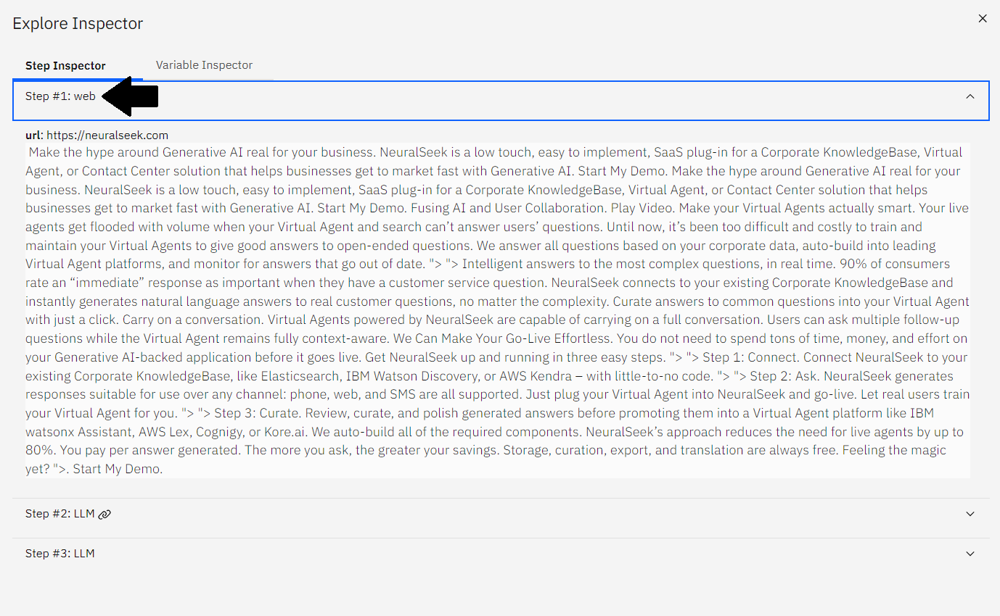
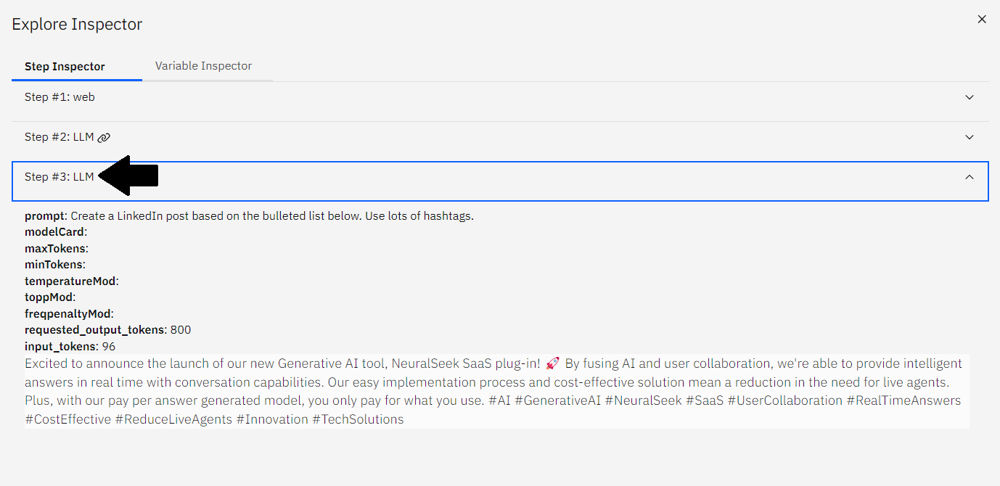

3.1 - mAIstro Tour
Os usuários farão um tour inicial do mAIstro para aprender a configurar de forma eficaz os diferentes nós, modificar as indicações de linguagem natural para o Modelo de Linguagem Grande (LLM) e gerar conteúdo dentro dos editores únicos do mAIstro.
Editor Visual
O Editor Visual é a maneira mais fácil de usar o mAIstro. No Editor Visual, os nós se conectam horizontalmente (chamados cadeias) e verticalmente. Os nós são executados a partir do canto superior esquerdo. À medida que a execução é realizada, para cada nível vertical qualquer cadeia existente nesse nível será avaliada antes de continuar.
Adicione um Nó
No menu da barra lateral, navegue até a seção Obter Dados.
- Clique no nó de Texto do Site. O nó será exibido como uma caixa dentro do Editor Visual.
{kind=link}
Configure o Nó de Texto do Site
Clique na caixa do nó e um painel de propriedades aparecerá ao lado.
- Adicione uma URL à configuração, por exemplo:
https://neuralseek.com.
{kind=link}
Adicione um Segundo Nó
No menu da barra lateral, navegue até a seção Gerar Dados.
- Clique no nó Enviar para LLM. O novo nó será exibido como uma caixa dentro do Editor Visual.
{kind=link}
Conecte o Nó LLM
Clique no nó LLM e arraste-o para conectá-lo ao lado direito do nó do Texto do Site, formando uma cadeia.

Configure o Nó LLM
Ao clicar no nó, um painel de propriedades aparecerá.
- Adicione uma indicação dentro do painel para fazer uma lista de marcadores a partir do nosso site rastreado. Por exemplo:
Create a bulleted list of the major topics from the documentation below.

Adicione um Terceiro Nó
No menu da barra lateral, navegue até a seção Gerar Dados.
- Clique no nó Enviar para LLM. O novo nó será exibido como uma caixa dentro do Editor Visual.

Configure o Nó LLM
Observe como o segundo nó LLM foi preenchido abaixo da cadeia horizontal.
- Clique no nó e um painel de propriedades aparecerá.
- Adicione uma indicação dentro do painel para criar uma postagem do LinkedIn com base na lista de marcadores gerada a partir do site rastreado. Por exemplo:
Create a LinkedIn post based on the bulleted list below. Use lots of hashtags.

Avalie o Fluxo do mAIstro
Vamos executar nosso fluxo!
- Clique no botão azul Avaliar na barra inferior. Seu conteúdo gerado aparece neste painel.
{kind=link}
Baixe o Conteúdo Gerado
Opcionalmente, você também pode baixá-lo em formatos MS Word ou CSV.
- Clique na opção Microsoft Word ao lado de Formato de Saída para baixar o conteúdo recém-gerado como um documento MS Word.

Depurar o Fluxo
Clique no ícone de inseto no canto superior direito para ver o caminho completo da avaliação, mais todas as variáveis de contexto.
- Clique em cada etapa para expandir a avaliação completa.
- Etapa #1: web
- Observe o conteúdo gerado a partir do scrape do URL fornecido, neste exemplo
https://neuralseek.com. - 
- Observe o conteúdo gerado a partir do scrape do URL fornecido, neste exemplo
- Etapa #2: LLM
- Observe o ícone de link da cadeia ao lado desta etapa para indicar que este é um nó encadeado.
- O conteúdo gerado mostra uma lista de marcadores de tópicos principais da documentação que foi retirada do site rastreado, assim como a indicação.

- Etapa #3: LLM
- Observe que o conteúdo gerado aqui é o mesmo que o conteúdo resultante do clique no botão Avaliar. Isso se deve ao fato de que esta é a etapa final do fluxo.
- O conteúdo gerado mostra uma postagem de blog LinkedIn com muitas hashtags com base na lista de marcadores de recursos principais gerados na Etapa #2, tal como indicado.
- 
{kind=link}
{kind=link}
Salvar o Modelo
Você pode salvar modelos para uso futuro e chamar pelo nome via API clicando no botão Salvar na barra inferior.
- Adicione um nome exclusivo ao modelo, por exemplo:
Lab_Tour. - Opcionalmente, adicione uma descrição exclusiva para facilitar a navegação. Por exemplo:
A LinkedIn post based on a list of features from NeuralSeek's website..

Você também pode baixar uma especificação OpenAPI do fluxo com todos os parâmetros necessários para importar facilmente em outras ferramentas, como um agente virtual, clicando no botão Gerar Especificação OpenAPI na barra inferior.

Continuar a Explorar
Isso abrange o básico do mAIstro.
- Clique em Próximo para continuar as diversas opções de geração de saída com vários modelos de exemplo, opções de seleção de dados, modificações nos dados e prompts de dados gerativos exclusivos na plataforma mAIstro da NeuralSeek.